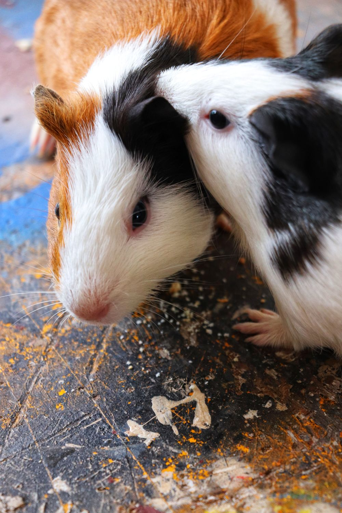

The pet guinea pig
Cavia porcellusThis is the domestic guinea pig. Its coats come in many colors and textures. Domestic guinea pigs do not have a natural wild population.
Guinea pigs are also called cavies. Their story begins in South America, long before they became our little companions.

A species is a biological kind of animal. A breed is a variety within a domesticated species. American, Abyssinian, and Peruvian guinea pigs are different breeds of the same species: Cavia porcellus.
This is the domestic guinea pig. Its coats come in many colors and textures. Domestic guinea pigs do not have a natural wild population.
The montane guinea pig lives in parts of South America. Scientists consider this wild cavy the likely ancestor of domestic guinea pigs.
The ancestors of our pets lived in the Andes region. People domesticated guinea pigs there before they spread around the world.
Sources: Smithsonian’s National Zoo and Merck Veterinary Manual. Photo credit.
Ready to meet the smooth-coated and wonderfully swirly members of the family?
Explore the breeds →